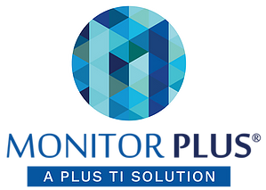
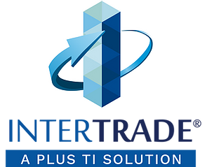

Plus TI provee diferentes soluciones para la prevención y control de crímenes financieros y optimización de procesos institucionales. Estos se derivan de sus productos base: Monitor Plus® e Intertrade Plus®.

Monitor Plus®
Soluciones Inteligentes
Ver Más

Intertrade Plus®
Suite de Operaciones Internacionales
Ver Más